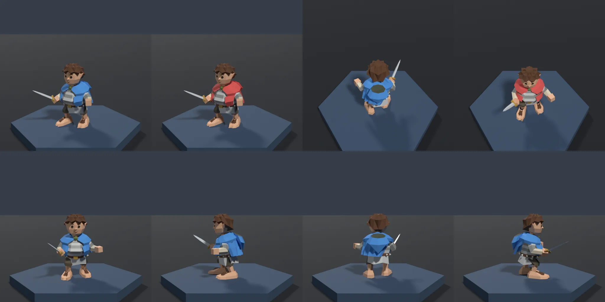
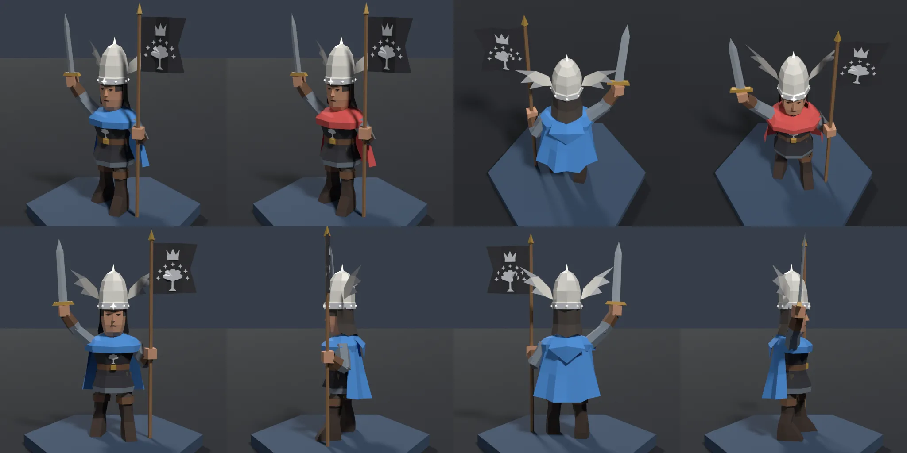
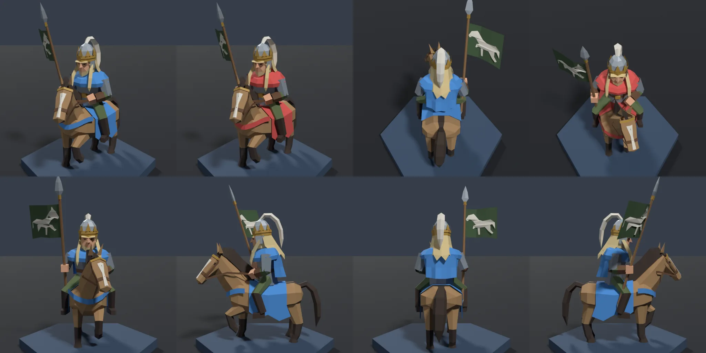
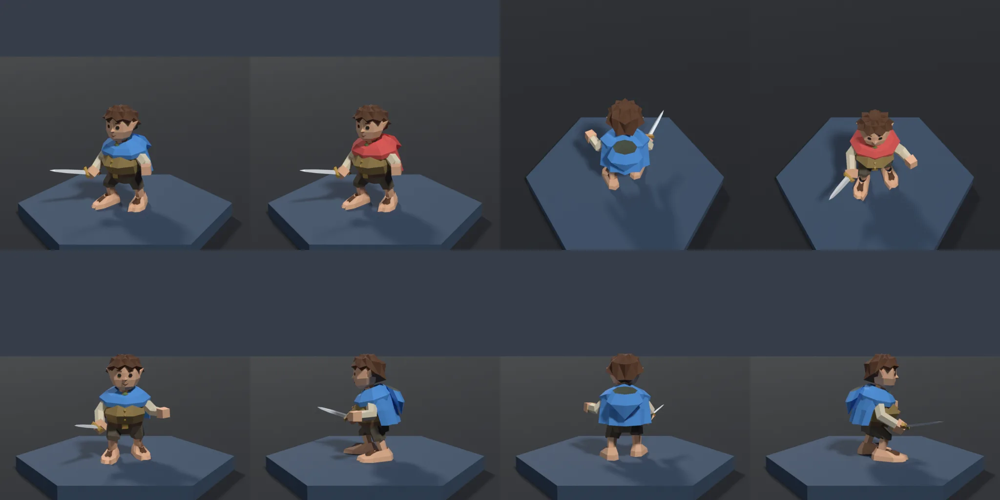
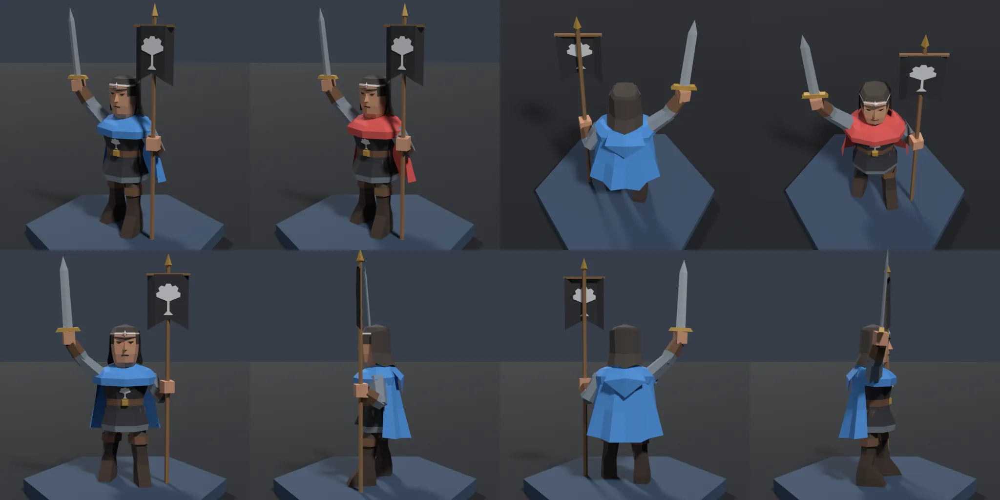
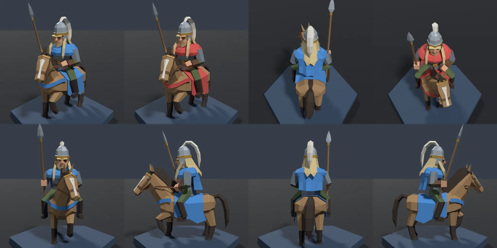

<title>Star Levels on the Board</title>
<meta name="claude:viewport-fit-sides" content="cover">
<link rel="preconnect" href="https://fonts.googleapis.com">
<link rel="stylesheet" href="https://fonts.googleapis.com/css2?family=Cormorant+SC:wght@500;700&family=Source+Serif+4:opsz,wght@8..60,400;8..60,600&family=IBM+Plex+Mono:wght@400;500&display=swap">
<style>
/* Layout: a single reading column of option sections; each shows the option beside the recommendation, from the same camera. */
:root {
  --bg: #f3f1ec;
  --panel: #e8e5dd;
  --fg: #23211d;
  --muted: #6a655b;
  --rule: #cfc9bc;
  --gold: #8a6a1f;
  --silver: #6d737a;
  --blue: #2f6db3;
  --red: #b9433f;
  --shot: #12161c;
  --display: "Cormorant SC", "Palatino Linotype", Georgia, serif;
  --body: "Source Serif 4", Georgia, serif;
  --mono: "IBM Plex Mono", ui-monospace, Menlo, monospace;
}
@media (prefers-color-scheme: dark) {
  :root:not([data-theme="light"]) {
    --bg: #15171b; --panel: #1e2126; --fg: #e6e1d6; --muted: #a39d90; --rule: #343840;
    --gold: #d2b46a; --silver: #b9bfc6; --blue: #6ea6e6; --red: #e57c78; color-scheme: dark;
  }
}
:root[data-theme="dark"] {
  --bg: #15171b; --panel: #1e2126; --fg: #e6e1d6; --muted: #a39d90; --rule: #343840;
  --gold: #d2b46a; --silver: #b9bfc6; --blue: #6ea6e6; --red: #e57c78; color-scheme: dark;
}
body {
  background: var(--bg); color: var(--fg); font: 17px/1.55 var(--body);
  padding-left: max(16px, env(safe-area-inset-left, 0px));
  padding-right: max(16px, env(safe-area-inset-right, 0px));
}
main { max-width: 1180px; margin: 0 auto; padding-block: 40px 80px; display: grid; gap: 56px; }
h1, h2, h3 { font-family: var(--display); font-weight: 700; text-wrap: balance; margin: 0; line-height: 1.1; }
h1 { font-size: clamp(2.2rem, 5vw, 3.4rem); }
h2 { font-size: 1.9rem; }
h3 { font-size: 1.25rem; }
p { margin: 0; max-width: 68ch; }
.lede { display: grid; gap: 14px; }
.stars { font-family: var(--display); letter-spacing: .1em; }
.s1 { color: var(--muted); } .s2 { color: var(--silver); } .s3 { color: var(--gold); }
.eyebrow { font: 500 12px/1 var(--mono); text-transform: uppercase; letter-spacing: .12em; color: var(--muted); }
nav.index { display: flex; flex-wrap: wrap; gap: 8px; }
nav.index a { font: 14px var(--mono); color: var(--fg); text-decoration: none; padding: 6px 10px; border: 1px solid var(--rule); border-radius: 3px; }
nav.index a:hover, nav.index a:focus-visible { border-color: var(--gold); outline: none; }
nav.index a.rec { border-color: var(--gold); color: var(--gold); }
section { display: grid; gap: 16px; border-top: 1px solid var(--rule); padding-top: 28px; }
.head { display: flex; flex-wrap: wrap; align-items: baseline; gap: 6px 16px; }
.tags { display: flex; flex-wrap: wrap; gap: 6px; }
.tag { font: 12px/1 var(--mono); padding: 5px 7px; border-radius: 2px; background: var(--panel); color: var(--muted); }
.tag.good { color: var(--fg); }
.tag.warn { color: var(--red); }
ul.trade { margin: 0; padding-left: 1.2em; max-width: 68ch; display: grid; gap: 4px; }
.views { display: flex; flex-wrap: wrap; gap: 6px; }
.views button {
  font: 13px var(--mono); padding: 6px 10px; border-radius: 3px; cursor: pointer;
  background: transparent; color: var(--fg); border: 1px solid var(--rule);
}
.views button[aria-pressed="true"] { background: var(--fg); color: var(--bg); border-color: var(--fg); }
.views button:focus-visible { outline: 2px solid var(--gold); outline-offset: 2px; }
.pair { display: grid; grid-template-columns: 1fr 1fr; gap: 12px; }
.pair.single { grid-template-columns: 1fr; }
@media (max-width: 760px) { .pair { grid-template-columns: 1fr; } }
figure { margin: 0; display: grid; gap: 6px; min-width: 0; }
figure a { display: block; background: var(--shot); border-radius: 3px; overflow: hidden; }
figure img { display: block; width: 100%; height: auto; aspect-ratio: 16 / 9; object-fit: cover; }
figcaption { font: 13px var(--mono); color: var(--muted); }
.table-wrap { overflow-x: auto; }
table { border-collapse: collapse; font: 14px var(--mono); font-variant-numeric: tabular-nums; min-width: 560px; }
th, td { text-align: left; padding: 7px 14px 7px 0; border-bottom: 1px solid var(--rule); vertical-align: top; }
th { font-weight: 500; color: var(--muted); }
td.num { text-align: right; }
.sheets { display: grid; grid-template-columns: repeat(auto-fit, minmax(300px, 1fr)); gap: 14px; }
.sheets img { aspect-ratio: 2 / 1; }
.ask { background: var(--panel); padding: 20px; border-radius: 4px; display: grid; gap: 10px; }
.ask ol { margin: 0; padding-left: 1.3em; display: grid; gap: 4px; }
code { font: .88em var(--mono); }
@media (prefers-reduced-motion: reduce) { * { transition: none !important; } }
</style>

<main>
  <header class="lede">
    <div class="eyebrow">LOTR Tactics · art study · 1 November 2026</div>
    <h1>How a unit shows its stars</h1>
    <p>Three copies of a unit merge into a <span class="stars s2">★★</span>, and three of those into a <span class="stars s3">★★★</span>. Today only the label says so. This study puts Frodo (small), Aragorn (standard) and Éomer (mounted) on the game's board at all three levels, with each option from the handoff, so the choice can be made by looking.</p>
    <p>Every board shot uses the game's camera, lights and team colours. Blue stands in rows 1 to 3, seen from behind, the way you see your own units. Red stands in rows 4 to 6, seen from the front. Stars run left to right: <span class="stars s1">★</span> <span class="stars s2">★★</span> <span class="stars s3">★★★</span>. Each option sits beside the recommendation from the same camera. Click a picture for full size.</p>
  </header>

  <nav class="index" aria-label="Options">
    <a class="rec" href="#recommended">Recommended</a>
    <a href="#today">Today</a>
    <a href="#grow">1 · Grow</a>
    <a href="#base">2 · Base</a>
    <a href="#trim">3 · Trim</a>
    <a href="#gear">4 · Gear</a>
    <a href="#book">5 · Book moment</a>
    <a href="#aura">6 · Aura</a>
    <a href="#models">The 3★ models</a>
    <a href="#choose">Choose</a>
  </nav>

  <section id="recommended">
    <div class="head"><h2>Recommended</h2><span class="eyebrow">grow at 2★ · book model at 3★ · stars on the label</span></div>
    <div class="tags"><span class="tag good">client: one scale per star, load &lt;id&gt;-3.glb</span><span class="tag warn">art: 36 new models</span><span class="tag good">stays in the hex</span></div>
    <ul class="trade">
      <li>2★ is 10% bigger; Riders and Large units grow only as far as the hex allows (Éomer 2%).</li>
      <li>3★ swaps in the book-moment model, kept at the 2★ scale so it never shrinks.</li>
      <li>The label keeps its stars, so a 2★ Rider still reads even though he barely grows.</li>
      <li>Base and trim stay in reserve; no aura.</li>
    </ul>
    <div data-gallery="recommended" data-views="all,0,1,2" data-solo></div>
  </section>

  <section id="today">
    <div class="head"><h2>Today</h2><span class="eyebrow">the label only</span></div>
    <p>The baseline: the same model at every level, with the stars only in the label.</p>
    <div data-gallery="today" data-views="all,0,1,2"></div>
  </section>

  <section id="grow">
    <div class="head"><h2>1 · Grow</h2><span class="eyebrow">2★ +10%, 3★ +20%</span></div>
    <div class="tags"><span class="tag good">client only: one line</span><span class="tag warn">Riders: 2% and 4%</span></div>
    <ul class="trade">
      <li>Cheapest by far, and it reads on Frodo and Aragorn from both sides.</li>
      <li>Size only compares a unit with itself: a 3★ Frodo is still half a 1★ Aragorn.</li>
      <li>Éomer already reaches 0.91 of the hex's 0.94, so he can grow only 3.8% before he spills. Here he is held to 2% and 4%, which you can hardly see.</li>
    </ul>
    <div data-gallery="grow" data-views="all,0,1,2"></div>
    <h3>Grow without the hex limit</h3>
    <p>For comparison: Éomer at the full 10% and 20%. His 3★ reaches 1.09, past the 0.94 hex edge and into the neighbouring hexes.</p>
    <div data-gallery="grow-unclamped" data-views="2,all"></div>
  </section>

  <section id="base">
    <div class="head"><h2>2 · Base</h2><span class="eyebrow">a low stand under every unit</span></div>
    <div class="tags"><span class="tag good">client only: built once</span><span class="tag">says nothing about the character</span><span class="tag good">could carry the team colour</span></div>
    <ul class="trade">
      <li><b>Rim:</b> plain at 1★, silver at 2★, gold at 3★. Clear from every side, and the same on every unit.</li>
      <li><b>Pips:</b> one, two or three diamonds on the front edge. Readable from the front; from behind the model hides them.</li>
      <li><b>Team:</b> a rim in the team colour with star pips, for the other open question in design item 2. It helps tell sides apart, but the colour then no longer says the star level.</li>
      <li>Every unit gains 0.05 in height, and the stand turns the board into tabletop pieces, which is a change of feel.</li>
    </ul>
    <div data-gallery="base-rim" data-views="all,0,1,2" data-label="Rim"></div>
    <div data-gallery="base-pips" data-views="all,1" data-label="Pips"></div>
    <div data-gallery="base-team" data-views="all,1" data-label="Team"></div>
  </section>

  <section id="trim">
    <div class="head"><h2>3 · Trim</h2><span class="eyebrow">fittings iron, then silver, then gold</span></div>
    <div class="tags"><span class="tag good">no new models</span><span class="tag warn">art: name the trim in all 36 scripts</span><span class="tag warn">a few pixels at game size</span></div>
    <ul class="trade">
      <li>Buckles, sword guards, clasps and the browband are recoloured iron, silver and gold.</li>
      <li>Gold has to stay muted under the palette rules, and at game size the fittings are a few pixels. Even close up, it is hard to tell the levels apart.</li>
      <li>Only about half the roster has a brass, gold or silver material today, so every script needs a pass.</li>
    </ul>
    <div data-gallery="trim" data-views="1,0,2,all"></div>
  </section>

  <section id="gear">
    <div class="head"><h2>4 · Gear</h2><span class="eyebrow">each star adds a piece · Aragorn only</span></div>
    <div class="tags"><span class="tag warn">art: 72 variants</span><span class="tag good">reads on the character</span></div>
    <ul class="trade">
      <li>1★ Strider, 2★ adds steel shoulder plates (874 triangles), 3★ is King Elessar.</li>
      <li>The plates show from behind but are modest at the default camera; a crest or banner would be louder, but would compete with the 3★.</li>
      <li>Elessar can't also wear the plates within his 1,000-triangle budget, so the step to 3★ swaps gear rather than adding it.</li>
    </ul>
    <div data-gallery="gear" data-views="0" data-compare="1"></div>
  </section>

  <section id="book">
    <div class="head"><h2>5 · Book moment at 3★</h2><span class="eyebrow">each unit at its height in the books</span></div>
    <div class="tags"><span class="tag warn">art: 36 new models, 5-costs last</span><span class="tag good">reads on the character</span><span class="tag good">stays in the hex</span></div>
    <ul class="trade">
      <li><b>Frodo:</b> the mithril coat where the elven cloak opens, with a belt of pearls and crystals. Clear from the front; from behind, mostly the mail at his side and hem, since the cloak carries the team colour.</li>
      <li><b>Aragorn:</b> King Elessar, with the white winged crown, the Elendilmir, and Arwen's standard (the White Tree, seven stars, a crown). The loudest of the three from both sides.</li>
      <li><b>Éomer:</b> Éomer King, with a crowned helm and the royal banner, a white horse on green. The banner carries it from behind; the crown shows from the front.</li>
      <li>On its own it says nothing at 2★, so this option pairs with something for 2★ (the recommendation pairs it with Grow).</li>
    </ul>
    <div data-gallery="book" data-views="all,0,1,2"></div>
  </section>

  <section id="aura">
    <div class="head"><h2>6 · Aura</h2><span class="eyebrow">a faint glow at 3★</span></div>
    <div class="tags"><span class="tag good">client only</span><span class="tag warn">competes with ability effects</span></div>
    <ul class="trade">
      <li>A warm ground glow and a faint column of light, never blue or red.</li>
      <li>It reads at a glance, but looks like a buff or a cast. In a fight, with casts, shields and statuses already drawn as effects, it would be ambiguous.</li>
    </ul>
    <div data-gallery="aura" data-views="all,1,2"></div>
  </section>

  <section id="models">
    <div class="head"><h2>The 3★ models</h2><span class="eyebrow">Cycles preview sheets</span></div>
    <p>Placeholder budget for 3★: 25% more than the unit's own (1,000 for a unit, 1,500 for a mounted one). Every model passes <code>finish()</code>: under budget, inside the hex, metallic at most 0.15.</p>
    <div class="table-wrap">
      <table>
        <thead><tr><th>Model</th><th>File</th><th class="num">Triangles</th><th class="num">Budget</th><th class="num">Height</th><th class="num">Reach</th></tr></thead>
        <tbody>
          <tr><td>Frodo 1★</td><td>frodo.glb</td><td class="num">754</td><td class="num">800</td><td class="num">0.88</td><td class="num">0.66</td></tr>
          <tr><td>Frodo 3★</td><td>frodo-3.glb</td><td class="num">918</td><td class="num">1,000</td><td class="num">0.88</td><td class="num">0.62</td></tr>
          <tr><td>Aragorn 1★</td><td>aragorn.glb</td><td class="num">746</td><td class="num">800</td><td class="num">2.03</td><td class="num">0.62</td></tr>
          <tr><td>Aragorn 2★ gear</td><td>aragorn-2-gear.glb</td><td class="num">874</td><td class="num">900</td><td class="num">2.03</td><td class="num">0.62</td></tr>
          <tr><td>Aragorn 3★</td><td>aragorn-3.glb</td><td class="num">962</td><td class="num">1,000</td><td class="num">2.10</td><td class="num">0.84</td></tr>
          <tr><td>Éomer 1★</td><td>eomer.glb</td><td class="num">1,177</td><td class="num">1,200</td><td class="num">1.93</td><td class="num">0.91</td></tr>
          <tr><td>Éomer 3★</td><td>eomer-3.glb</td><td class="num">1,267</td><td class="num">1,500</td><td class="num">2.12</td><td class="num">0.91</td></tr>
        </tbody>
      </table>
    </div>
    <p>Height is to the highest point, which for Aragorn and Éomer is the standard or the spear. Reach is the furthest point from the centre; the hex's radius is 0.94.</p>
    <div class="sheets">
      <figure><a href="img/sheet-frodo-3.webp" target="_blank" rel="noopener"></a><figcaption>Frodo ★★★ · mithril coat</figcaption></figure>
      <figure><a href="img/sheet-aragorn-3.webp" target="_blank" rel="noopener"></a><figcaption>Aragorn ★★★ · King Elessar</figcaption></figure>
      <figure><a href="img/sheet-eomer-3.webp" target="_blank" rel="noopener"></a><figcaption>Éomer ★★★ · Éomer King</figcaption></figure>
      <figure><a href="img/sheet-aragorn-2-gear.webp" target="_blank" rel="noopener"></a><figcaption>Aragorn ★★ gear · shoulder plates</figcaption></figure>
      <figure><a href="img/sheet-frodo.webp" target="_blank" rel="noopener"></a><figcaption>Frodo ★ · with trim</figcaption></figure>
      <figure><a href="img/sheet-aragorn.webp" target="_blank" rel="noopener"></a><figcaption>Aragorn ★ · with trim</figcaption></figure>
      <figure><a href="img/sheet-eomer.webp" target="_blank" rel="noopener"></a><figcaption>Éomer ★ · with trim</figcaption></figure>
    </div>
  </section>

  <section id="choose">
    <div class="ask">
      <h2>Choose</h2>
      <p>Answer in the session or on the pull request. Any mix works, for example:</p>
      <ol>
        <li><b>The recommendation as it is:</b> grow at 2★, the book model at 3★.</li>
        <li><b>The recommendation plus a base</b> (rim, pips or team colour), if Riders need more at 2★ than 2% of growth.</li>
        <li><b>Something else:</b> any of the six, or a change to one of the 3★ models.</li>
      </ol>
      <p>Nothing is rolled out until you choose. After that the choice goes into <code>design.md</code> section 12 and <code>viewer-spec.md</code> section 4, and the other 33 units and the client follow as a planned roll-out.</p>
    </div>
  </section>
</main>

<script>
const NAMES = { all: 'All three', 0: 'Frodo', 1: 'Aragorn', 2: 'Éomer' };
function shot(option, view, kind) {
  const sub = view === 'all' ? 'all' : `unit-${view}`;
  return `img/${option}-${sub}-${kind}.webp`;
}
function figure(src, caption, alt) {
  const f = document.createElement('figure');
  f.innerHTML = `<a href="${src}" target="_blank" rel="noopener"></a><figcaption>${caption}</figcaption>`;
  return f;
}
document.querySelectorAll('[data-gallery]').forEach((el, n) => {
  const option = el.dataset.gallery;
  const views = el.dataset.views.split(',');
  const solo = el.hasAttribute('data-solo');
  const label = el.dataset.label ? `${el.dataset.label} · ` : '';
  const wrap = document.createElement('div');
  wrap.style.display = 'grid';
  wrap.style.gap = '10px';
  const bar = document.createElement('div');
  bar.className = 'views';
  bar.setAttribute('role', 'group');
  bar.setAttribute('aria-label', `${label}views`);
  const pair = document.createElement('div');
  pair.className = 'pair';
  const show = (view) => {
    pair.replaceChildren();
    bar.querySelectorAll('button').forEach((b) => b.setAttribute('aria-pressed', String(b.dataset.view === view)));
    const who = NAMES[view];
    if (solo) {
      // The recommendation: the game's own camera and the close-up.
      pair.append(
        figure(shot(option, view, 'board-zoom'), `${who} · close up`, `${who}, recommended, close up`),
        figure(shot(option, view === 'all' ? 'all' : view, view === 'all' ? 'board' : 'board-far'), view === 'all' ? 'All three · the game\'s camera' : `${who} · from behind red (blue's fronts)`, `${who}, recommended, other view`),
      );
      return;
    }
    if (el.dataset.compare) {
      // Gear is Aragorn only: compare with the recommendation's Aragorn.
      pair.append(
        figure(shot(option, view, 'board-zoom'), `${label}Aragorn · gear`, 'Aragorn with gear at each star'),
        figure(shot('recommended', el.dataset.compare, 'board-zoom'), 'Aragorn · recommended', 'Aragorn, recommended'),
      );
      return;
    }
    pair.append(
      figure(shot(option, view, 'board-zoom'), `${label}${who} · ${option.replace('-', ' ')}`, `${who}, ${option}`),
      figure(shot('recommended', view, 'board-zoom'), `${who} · recommended`, `${who}, recommended`),
    );
  };
  views.forEach((view) => {
    const b = document.createElement('button');
    b.type = 'button';
    b.id = `v-${n}-${view}`;
    b.dataset.view = view;
    b.textContent = NAMES[view];
    b.addEventListener('click', () => show(view));
    bar.append(b);
  });
  if (views.length > 1) wrap.append(bar);
  wrap.append(pair);
  el.replaceWith(wrap);
  show(views[0]);
});
</script>
